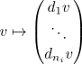

subobject of a semi-simple object is semi-simple
Proposition
Let $V_i$ be a pairwise non isomorphic simple objects. Let $V = \bigoplus (\bigoplus_{n_i} V_i)$ be the semi-simple object (for a finite sum).
Then any subobject $W$ of $V$ is up to isomorphism the direct sum inclusion.
Alternatively, then any subobject $W$ of $V$ is of the form $W = \bigoplus (\bigoplus_{r_i} V_i)$ and the inclusion identifies up to permutation of copies of $V_i$ by a diagonal matrix where the diagonal entries are isomorphisms.
Proof
proof 1
Proof by induction we argue by induction on $n = \sum_i n_i$.
induction basis
If $n \leq 1$ then we are done.
induction step
First we would like to find a simple subrepresentation. Consider $V \rightarrow V_i$ projection onto any summand, then either $W \rightarrow V \rightarrow V_i$ has a kernel or not If it doesnt, then $W \cong V_i$. so we are done. If it does have a kernel, then $W \cap \bigoplus_{n} V_{n_i}$ is nonzero and we can find a simple subrepresentaiton by induction. w.l.o.g. we assume that $P \cong V_i$ Then $\varphi_{\vert p}: P \rightarrow V$ factors thorugh $n_i V_}$ by schurs lemma and identifying $P \cong V_1$ it is given by $\{d_i\}_{n_i} \d_i$ via

where not all $d_i = 0$.
Now consdire the group $\mathrm{GL}_1(D_i) \simeq D_i^{\simeq}$ acting on $\bigoplus_{n_i} V_i$ on the left. This extends to an action on $V$ by acting on each $n_i$ by zero for $i \neq 1$.
Therefore it acts on the set of subrepresentations and preserves the property we have to establish. So pick $g_1 \in \mathrm{GL}_1(D)$ such that $g(d_1,...,d_n) = (1,0,...,0)$. Then $g P \subseteq gW$ is the inclusion of the first copy.
So $g W \subseteq V$ where $V_1 \oplus W' \subseteq V_1 \oplus \bigoplus_{n_1 - 1} V_i \oplus \bigoplus_{i \neq 1} \bigoplus_{n_i} V_i$ Apply the inductive hypothesis to $W'$ to conclude.